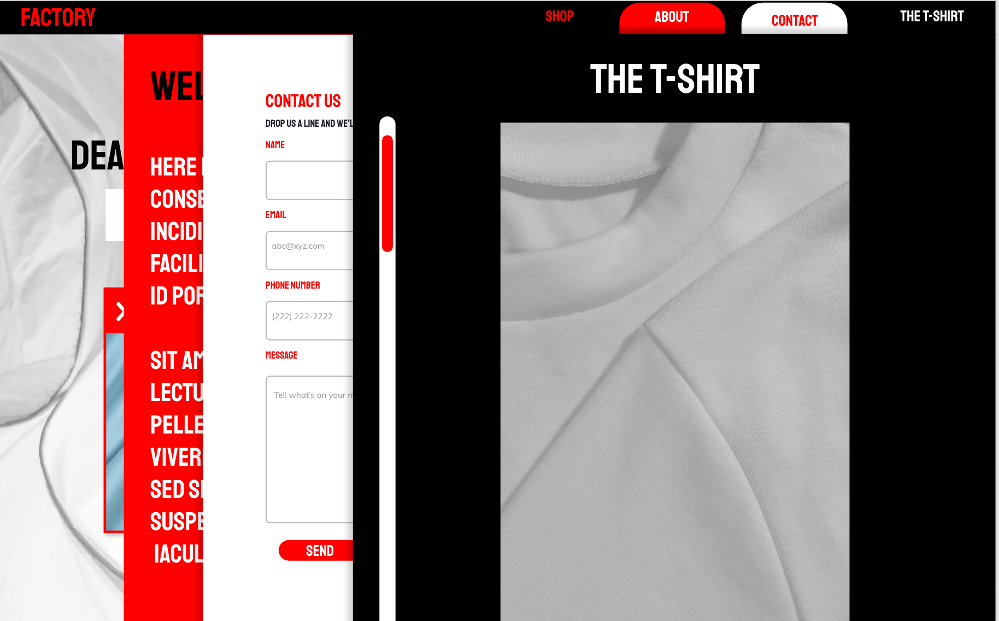

TEMA3

Grundlæggende UX
I dette tema har vi lært, at bruge forskellige research og brugerundersøgelses teknikker. Jeg skabte min hjemmeside op om begrebet “deadstock”, hvor jeg implementeret mit eget design-DNA, så vidt muligt, så hjemmesiden stadig har budskab i højsæde, og derved stadig rammer segment/målgruppe. For mig blev det ud over proces og metode, også vigtigt at skabe en hjemmeside med et budskab, og have fokus på vores markante overforbrug via fast track fashion, hvilket blev grundlaget for emnevalget: “deadstock”, selvom dette IKKE er bæredygtigt, billedeliggøre det tydeligt den pågælende problematik.
PROTOTYPE2
PITCHDECK